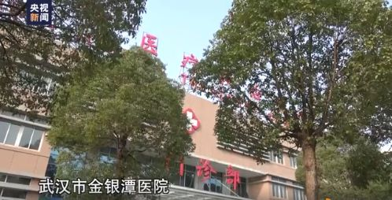

新冠肺炎治愈患者会有后遗症吗？
武汉市民张先生从事餐饮行业多年，他没有想到，像往常一样去华南海鲜批发市场进货的举动，会把自己与全国高度关注的新型肺炎联系起来。
从2019年12月24日出现发烧、咳嗽的症状，到今年1月15日治愈出院，张先生的爱人黄女士向红星新闻记者讲述了这段一生难忘的经历。
去华南海鲜批发市场进货 感染时甚至不知道病毒名称
张先生的病情大约从12月24日左右开始显现，“咳嗽、发烧，每天都在发烧，我们就当感冒在治疗。”见病情迟迟没有好转，家人把张先生送去武汉同济医院治疗。
“到同济医院的第二天，我爱人的肺部CT出来后，医生就问我们有没有去过华南海鲜市场。”随后，张先生被隔离，连同黄女士作为伴侣，也一并被隔离。
“不会完全限制我的自由，但是每天吃饭，都建议我们点外卖，我也可以出去打开水等，但是我也不想给医务工作者以及其他市民添麻烦，所以我们都待在隔离区。”黄女士说。
丈夫从事餐饮行业，所以常去华南海鲜批发市场进货，“但我们不知道那个市场里还有卖野生动物的，也不知道什么时候，做了什么事感染上的。”黄女士回忆，当时对这次武汉新型肺炎还没有准确的官方名称，“只知道我爱人得了病毒性肺炎。”
被隔离时通过视频与家人联系,从新闻里得知自己所感染的病毒名字
12月31日下午，张先生被转到了武汉金银潭医院，并完全隔离，“他住在6楼，ICU病房在7楼。”黄女士每天只能通过手机与爱人视频保持联系。“听医生说，我爱人感染的是一种和非典差不多的病。”黄女士说，得知这个消息后，她非常害怕，丈夫被隔离后，黄女士和家人也去做了检查，确认没有被感染。

从那时起，黄女士一家开始密切关注关于此次武汉肺炎的报道。1月12日，世界卫生组织（WHO）将造成武汉肺炎疫情的病毒命名为2019新型冠状病毒，“那时我们才知道，我丈夫感染的就是这种病毒。”
黄女士回忆，她每天与爱人通过视频联系，通过视频电话，她看到和丈夫一起被隔离的，还有四五个人，“好像从30多岁到50多岁的人都有。”
视频里的爱人张先生没有什么精神，张先生告诉她，自己依旧每天发烧，吃不下饭，“我很担心，直到几天后，他告诉我自己退烧了，也能吃饭了，我这才稍微放心一点。”
初到武汉的时候，其实我也是这么想的，口罩捂得严严实实，帽沿压的低低的。更有甚者，真实发生在我同事身上的事：在宾馆睡觉都要戴着口罩。后来戴口罩睡觉的哥们儿姐们儿说，“谁爱戴谁戴，反正我不戴，差点被憋死”。
1月15日，接到医院通知，张先生终于病愈可以出院，“听到爱人病愈的消息，我心里的大石头放下了，我真的非常感谢医院的工作人员，他们很辛苦，压力很大。”黄女士说，现在爱人在家休息，比起刚出院时全身无力的情况，现在爱人已经一天比一天好了，“接下来，就等一个月之后去医院复查就可以了。”
黄女士说，之所以接受这次采访，是希望通过爱人张先生的这次经历，告诉大家，不要恐慌，“治疗是一个过程，但是这个病是可以治愈的。”
新冠肺炎治愈患者会有后遗症吗？